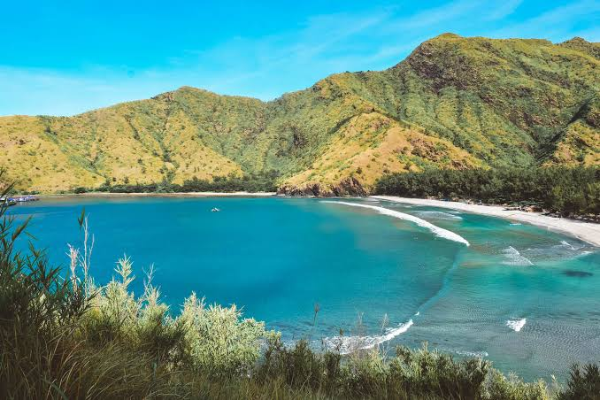
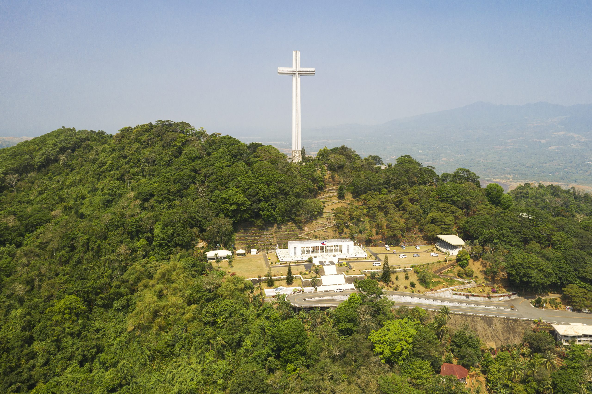
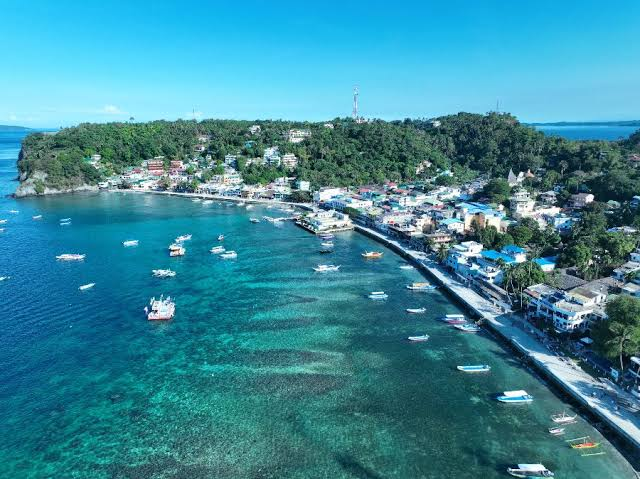
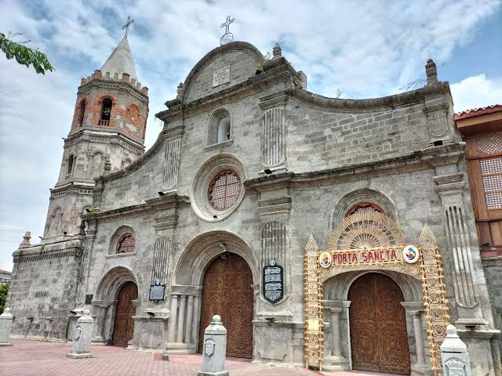
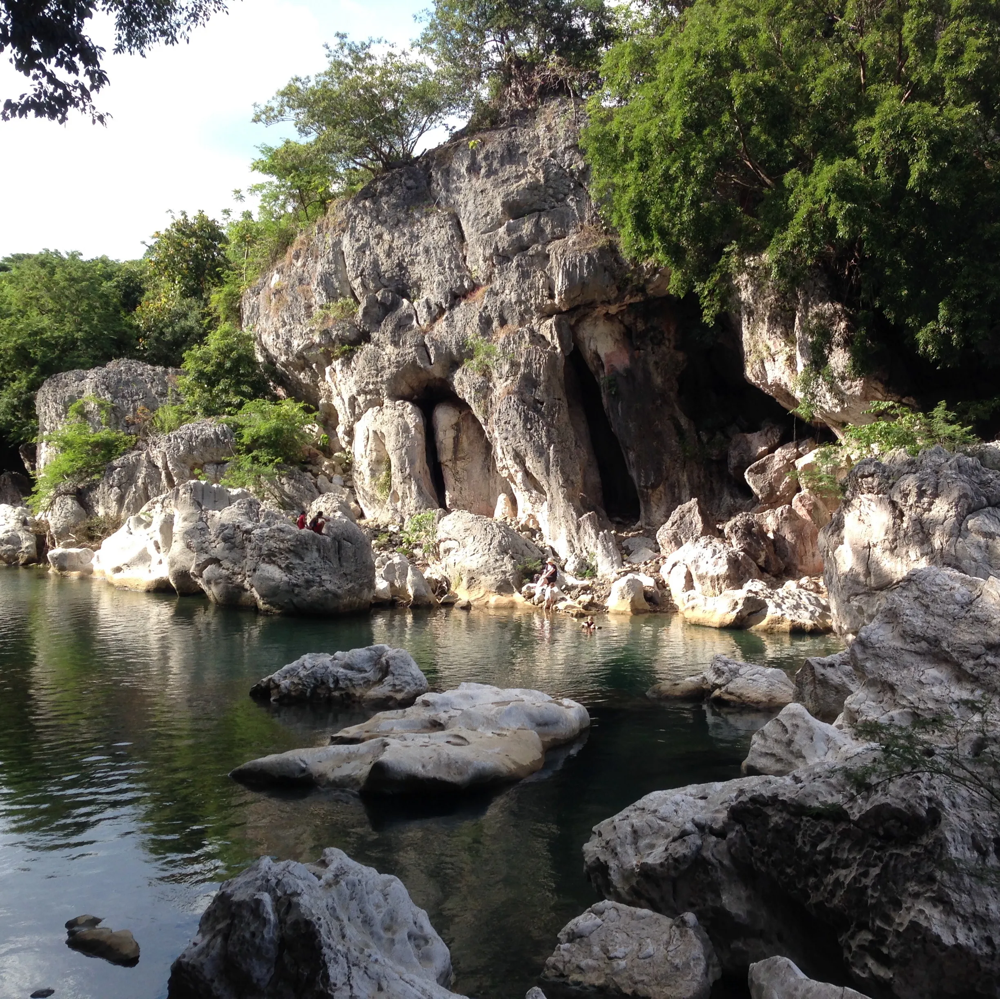

Popular Destinations

Mount Pinatubo Crater Lake
A 4x4 ride and a short trek lead to a turquoise lake inside the crater left by the 1991 eruption. The ash-colored canyon along the way looks like another planet.
Location: Capas, Tarlac (also reached from Botolan, Zambales)

Anawangin Cove
A crescent-shaped cove backed by pine-like agoho trees and soft gray-brown volcanic sand. Most visitors camp overnight and arrive by boat or by a short hike.
Location: San Antonio, Zambales

Mount Samat National Shrine
A memorial to the soldiers who fought in the Battle of Bataan in 1942. A giant cross stands at the top, with a viewing gallery and sweeping views of Manila Bay.
Location: Pilar, Bataan

Sabang Beach
A wide, sandy beach with gentle waves that make it a popular place to learn surfing. It is also the surf capital of the region.
Location: Baler, Aurora

Barasoain Church
The church where the Malolos Congress met in 1898 and where the First Philippine Republic was inaugurated. It is a national historical landmark.
Location: Malolos City, Bulacan

Biak-na-Bato National Park
A forested mountain park of caves, boulders, and streams that served as a hideout for revolutionaries in 1897. Hiking trails and guides are available.
Location: San Miguel, Bulacan